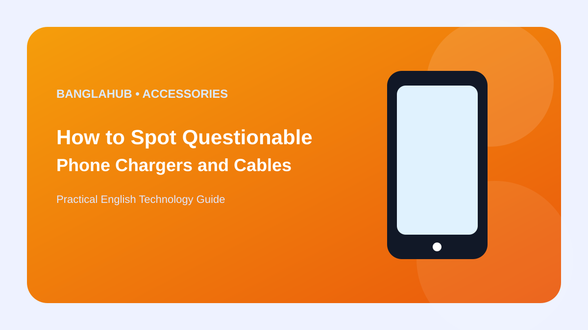

ACCESSORIES
How to Spot Questionable Phone Chargers and Cables

Charging accessories handle electrical power, so product quality matters beyond appearance and price.
Clear manufacturer information, sensible specifications and good physical condition are useful signs when choosing a replacement charger or cable.
Check the specifications
A USB-C connector does not guarantee a specific charging speed. Compare charger and cable capability with the device's requirements.
Do not choose an accessory only because its maximum wattage is large.
Inspect the build
Avoid cracked housings, exposed wires, loose connectors or products with unclear manufacturer information.
Replace damaged cables instead of relying on tape or improvised repairs.
Watch for heat
Some warmth is normal during charging, but repeated excessive heat, buzzing or a burning smell should not be ignored.
Disconnect a suspicious accessory and use a reputable replacement.
Buy for your use
A phone-only setup may need a simple compatible charger, while laptops and multi-device setups can require more capable cables and power supplies.
Keep product details and receipts when practical so you can identify the exact model later.
Frequently Asked Questions
What should I do first?
Start with the built-in settings or official documentation for your exact phone and identify the simplest cause before making major changes.
Can settings vary by phone?
Yes. Android versions, manufacturers, regions and service providers can change menu names and available features.
Where can I verify model-specific details?
Use the phone manufacturer's official support pages or the documentation supplied with the device.
Bottom line: Match the advice to your actual device and use official documentation for model-specific details. Avoid unnecessary apps, risky modifications and unsupported accessories.
Editorial note: Menu names, supported features and availability can vary by phone model, Android version, manufacturer and region. This guide is for general information and should be checked against current official documentation.